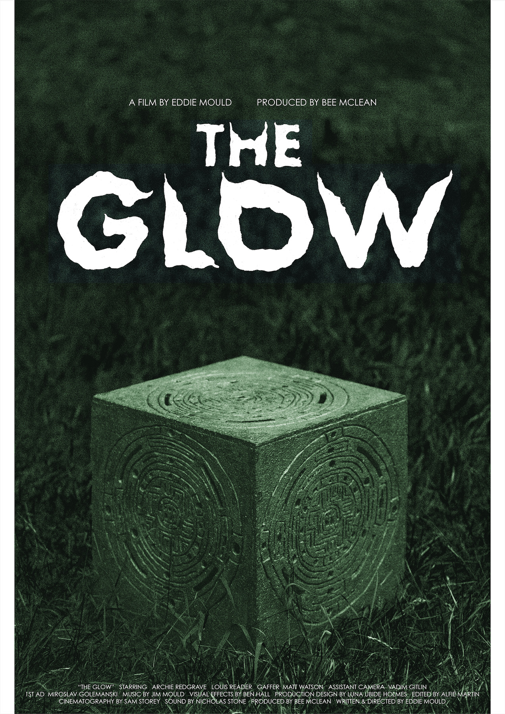
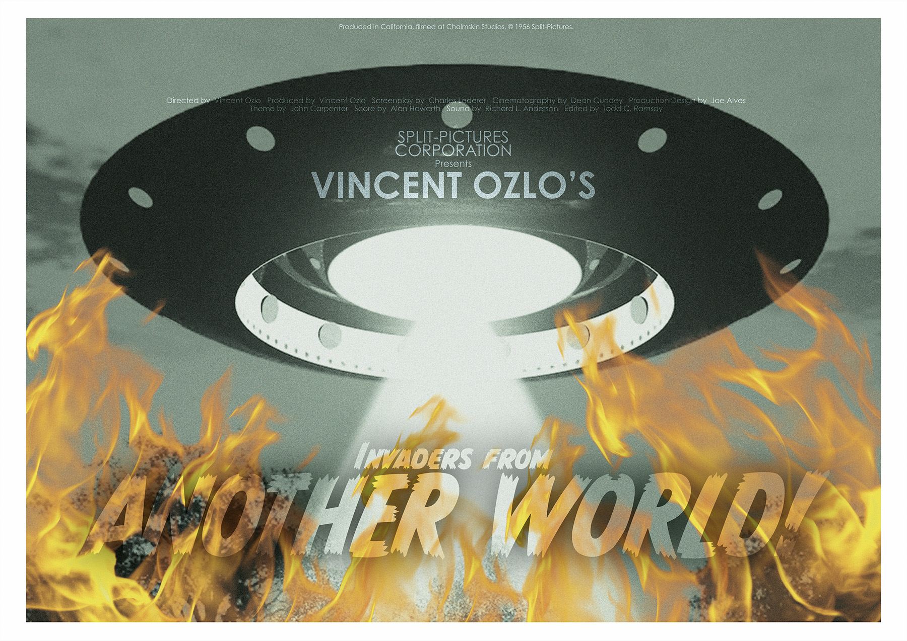
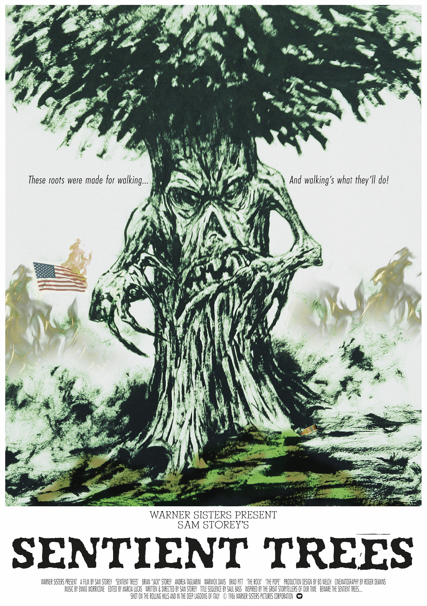
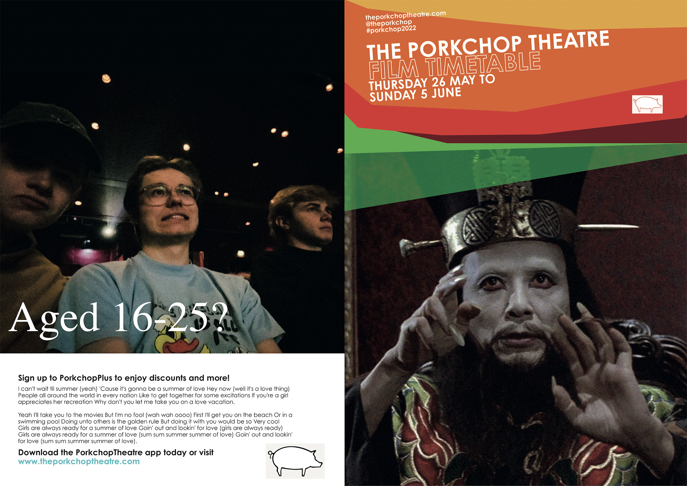

'The Glow' was a short film I made in my first year studying at Bournemouth Film School in 2022. For this film I designed the final poster as well as an assortment of graphical elements for the production design. These designs can be seen below.

final poster for 'the glow' (2022)
Above is the final poster for the short film. The custom typography is inspired by Sam Smith's design work for Nobuhiko Obayashi's film 'House'. The prominent visual element is a photo of the alien vessel that was designed for the film, tinted green.
Below are a series of designs I created that appear (physically) inside the film. Two posters that were posted on the outside of a cinema, and one flyer advertising the cinema.

film poster that appeared inside the final short

film poster that appeared inside the final short

cinema flyer that appeared inside the final short